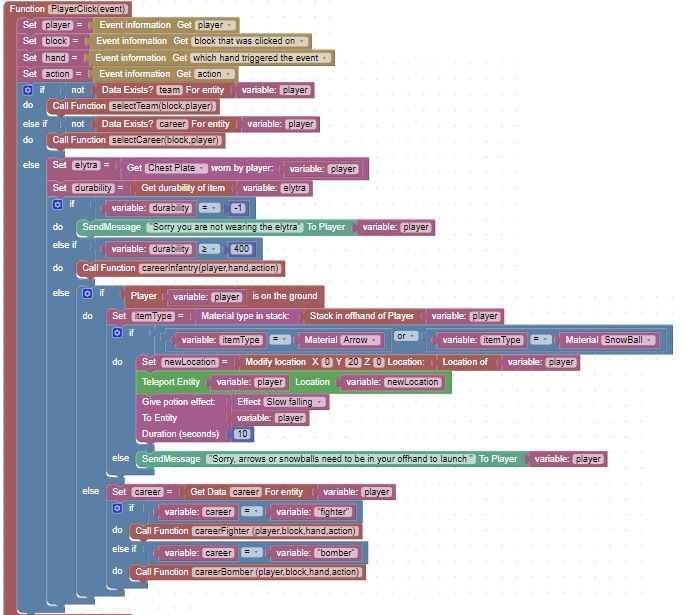

Self Documenting Code
Self documenting code is code that is clear and simple
In the below example, careerFighter is only called when the player has chosen fighter as their career
Similarly, careerBomber is only called when the player has chosen bomber as their career
